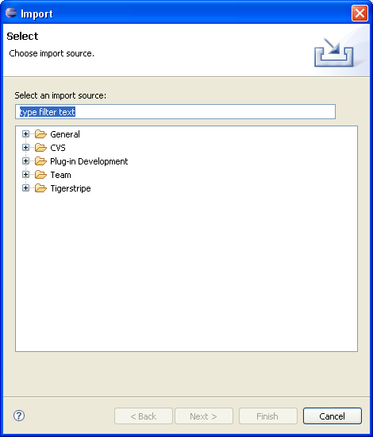
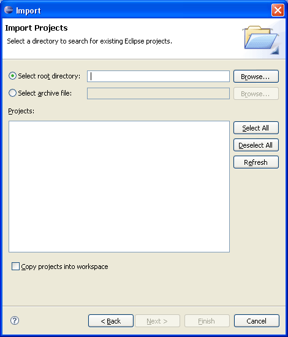

As for any Eclipse project, it is possible to import an existing Tigerstripe Project into your current workspace. The Tigerstripe Project that you want to import may be either a copy of the original Tigerstripe Project or an archived copy (.zip file) of the original project. If you want to import a Tigerstripe Project from CVS please refer to Tigerstripe Source Control Integration.
Before you Begin, make sure your Tigerstripe Perspective is active. Complete the following procedure to import a Tigerstripe Project.


Upon successful completion, the newly imported project appears in the Tigerstripe Explorer. If the project does not appear, check that the project imported contains all files of the original Tigerstripe Project.
© copyright 2005, 2006, 2007 Cisco Systems, Inc. - All rights reserved